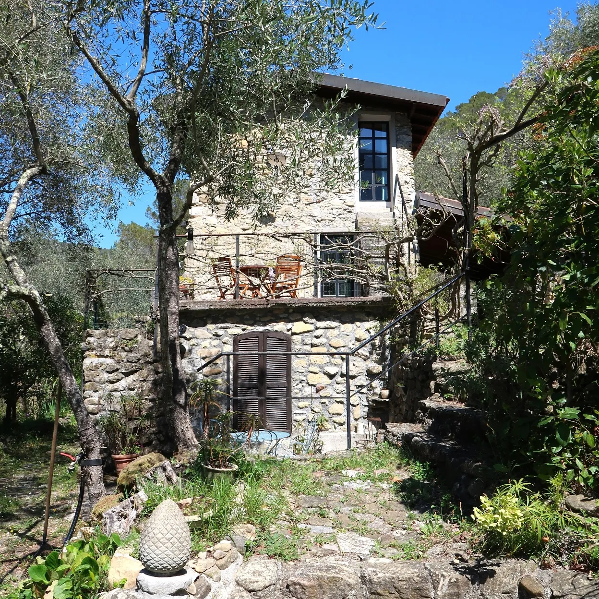
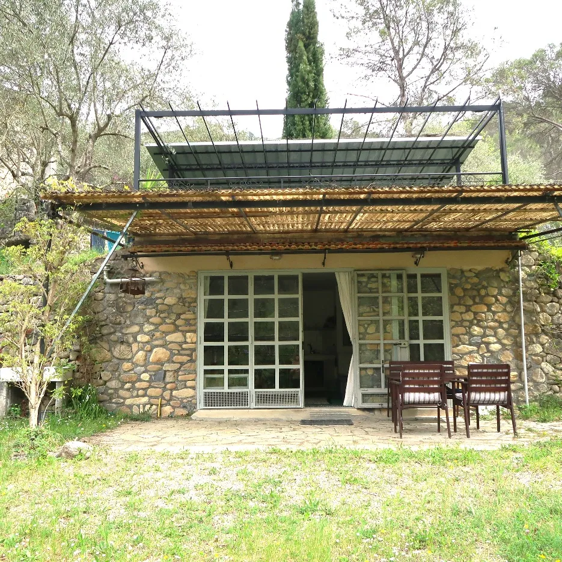

Casa dei Cigni
Een eenvoudig en sfeervol natuurstenen huis met houtkachel, keuken, drie slaapkamers, twee badkamers en terrassen op verschillende niveaus.
Ligurië - vlak bij Frankrijk en zee
Een vrijstaand natuurstenen huis tussen olijfbomen, riviergeluid en berghellingen, met een apart appartement vlakbij voor wie extra rust of ruimte zoekt.
Het doel van de plek
Casa dei Cigni ligt bij Olivetta San Michele, op ongeveer 15 kilometer van de Middellandse Zee. De plek combineert het eenvoudige ritme van een bergdal met stranden, dorpen, wandelroutes en cultuur in de directe omgeving.

Het huis en het appartement kunnen los worden gehuurd. In overleg is combinatiehuur mogelijk.
Een eenvoudig en sfeervol natuurstenen huis met houtkachel, keuken, drie slaapkamers, twee badkamers en terrassen op verschillende niveaus.

Een vrij gelegen appartement voor twee personen met eigen terras, keuken, badkamer, buitendouche en plek om in zon of schaduw te zitten.
Bevera, olijfbomen en sterrenlucht
Rondom het huis loopt de tuin over in de natuur. Vanaf de terrassen kijk je richting Olivetta, terwijl het geluid van de Bevera en de waterval door de vallei trekt.
Een korte selectie uit de beschikbare foto's. Op de detailpagina's staan de volledige fotogalerijen met lightbox.